#WaveSight¶
wavesight is a package that solves several problems in computational electromagnetism. * It can solve for the guided modes in a step-index fiber. * It can approximate the refraction of fields across a planar interface with arbitrary index profile. * It can propagate fields using a free space propagator.
To show it at work, we shall do a thorough study of a multimode optical waveguide.
[1]:
%load_ext autoreload
%autoreload 2
import sys
codebase_dir = '/Users/juan/ZiaLab/Codebase'
sys.path.append(codebase_dir)
import wavesight as ws
import numpy as np
from scipy import special
import matplotlib.pyplot as plt
from tqdm.notebook import tqdm
from scipy.optimize import fsolve, root_scalar
import cmasher as cm
from matplotlib.colors import LogNorm
from mpl_toolkits.axes_grid1.axes_divider import make_axes_locatable
%config InlineBackend.figure_format='retina'
import warnings
print("Warning disabling RuntimeWarning often due to evalution of square roots with negative arguments.\nProbably produced by scalar_root.")
warnings.filterwarnings("ignore", category=RuntimeWarning)
import pickle
from matplotlib.patches import Circle
import matplotlib.ticker as ticker
import cmasher as cmr
Warning disabling RuntimeWarning often due to evalution of square roots with negative arguments.
Probably produced by scalar_root.
[7]:
imports = '''
from itertools import product
import numpy as np
import h5py
import fire
import os
'''
%load_ext autoreload
%autoreload 2
from zizibee import zizibee as zzb
from time import sleep
exec(imports)
def fun1(i,j,k,l):
'''
This one and the next are just to emphasize the fact that
that all the defined functions are packaged and uploaded.
So that any functional dependenices of the target function
are met.
'''
return i - j + k - l
def fun2(i,j,k,l):
return i + j + k + l
def input_params(idx):
'''
This is a function that maps the job index to the input parameters
of the function to be run.
'''
ranger = range(1,5)
inputs = list(product(ranger,ranger,ranger,ranger))
return inputs[idx]
def complex_fun(job_index):
'''
A silly function to debug things.
The important thing is that the function is made so that the
function value is saved to scratch_dir in h5 format.
This function assumes that scratch_dir will be an available
symbol when the function is run at CCV. This part is taken care of by run_at_ccv.
'''
ins = input_params(job_index)
(i, j, k, l) = ins
zrange = fun1(i,j,k,l) + fun2(i,j,k,l)
out = np.linspace(0, abs(zrange), 100)
fname = '%d.h5' % job_index
fname = os.path.join(scratch_dir, fname)
with h5py.File(fname, 'w') as f:
f.create_dataset('out', data=out, compression='gzip')
f.create_dataset('in', data=ins, compression='gzip')
job_config = {'username':'jlizaraz',
'numCores':1,
'numJobs': 4**4,
'memInGB': 2,
'import_block': imports,
'extra_py': [],
'theglobals': globals(),
'fun_name': 'complex_fun',
'job_name': 'frodo'}
job_config = zzb.run_at_ccv(job_config, verbose=False)
# at this point the
mac_folder, ccv_folder = job_config['scratch_dir_at_mac'], job_config['scratch_dir_at_CCV']
numJobs = job_config['numJobs']
ccv_fruit = zzb.get_ccv_values(mac_folder, ccv_folder, numJobs)
The autoreload extension is already loaded. To reload it, use:
%reload_ext autoreload
Establishing an SSH connection to CCV and launching a shell ...
Saving Python script to file ...
Uploading script to CCV ...
Composing the sbatch script ...
Writing sbatch script ...
Sending sbatch script ...
Mac folder does not exist, creating ...
Progress: |██████████████████████████████| 100.0% Complete Elapsed Time: 62.64s Remaining Time: -0.24s
##FG050LGA¶
###Calculate the allowed propagation constants kz¶
[2]:
fiber_spec = {'NA': 0.22,
'nCore': 1.45,
'coreRadius':25.,
'grid_divider': 2,
'nFree': 1.,
'free_space_wavelength': 0.600}
fiber_sol = ws.multisolver(fiber_spec, drawPlots=False, verbose=True)
========================================
Approx number of complex HE modes: 800
Approx number of TE modes: 28
Approx number of TM modes: 28
Approx number of total modes: 1658
Approx Max n for HE modes: 40
========================================
Calculting TE(0,n) propagation constants ...
Calculting TM(0,n) propagation constants ...
Calculting HE(m,n) propagation constants ...
m=53
========================================
HE modes = 1590
TE modes = 36
TM modes = 36
TOTAL modes = 1662
FROM_Vnum = 1658
========================================
###Calculate the numerical mode basis¶
[3]:
fiber_sol = ws.calculate_numerical_basis(fiber_sol)
[4]:
pickle.dump(fiber_sol, open('eigenbasis-FG050LGA.pkl', 'wb'))
[6]:
# fiber_sol = pickle.load(open('eigenbasis-FG050LGA.pkl', 'rb'))
fiber_sol['coord_layout'] = ws.coordinate_layout(fiber_sol)
###Plot the modes¶
[18]:
from matplotlib.colors import LogNorm
from mpl_toolkits.axes_grid1.axes_divider import make_axes_locatable
[19]:
a, b, Δs, xrange, yrange, ρrange, φrange, Xg, Yg, ρg, φg, nxy, crossMask, numSamples = fiber_sol['coord_layout']
nCore = fiber_sol['nCore']
nCladding = fiber_sol['nCladding']
λfree = fiber_sol['free_space_wavelength']
[20]:
annotations = []
for modtype in ['TE','TM','HE']:
solkey = modtype + 'kz'
for m, kzs in fiber_sol[solkey].items():
for kzidx, kz in enumerate(kzs):
γ = np.sqrt(nCore**2*4*np.pi**2/λfree**2 - kz**2)
β = np.sqrt(kz**2 - nCladding**2*4*np.pi**2/λfree**2)
annotationTR = '%s(%d,%d)' % (modtype, m, kzidx)
annotationBR = 'kz=%.3f µm⁻¹' % (kz)
annotations.append((annotationTR, annotationBR))
[45]:
# plot one
def fmt(x, pos):
if x == 0:
return '0'
a, b = '{:.1e}'.format(x).split('e')
b = int(b)
return r'${} E{{{}}}$'.format(a, b)
plt.style.use('dark_background')
component_index = {"Et_ρ":(0,0), "Et_ϕ":(0,1), "Ht_ρ":(1,0), "Ht_ϕ":(1,1)}
index = -10
extent = [-b,b,-b,b]
for fun_picker in [np.abs, np.real]:
fig, axes = plt.subplots(nrows=2, ncols=2, figsize=(10,8))
if fun_picker in [np.real, np.imag]:
cmap = cm.watermelon
if fun_picker == np.real:
title_format = 'Re{%s}'
else:
title_format = 'Im{%s}'
else:
cmap = cm.ember
title_format = '|%s|'
for component, ci in component_index.items():
field = fiber_sol['eigenbasis'][index, ci[0], ci[1], :, :]
field = fun_picker(field)
if np.max(field) == 0 and fun_picker != np.abs:
if fun_picker == np.real:
fun_picker = np.imag
title_format = 'Im{%s}'
else:
fun_picker = np.real
title_format = 'Re{%s}'
field = eigenbasis[index, ci[0], ci[1], :, :]
field = fun_picker(field)
axis = axes[ci[0], ci[1]]
if fun_picker in [np.real, np.imag]:
themax = np.max(field)
vmax = themax
vmin = -themax
else:
vmax = np.max(field)
vmin = 0
iplot = axis.imshow(field,
# vmin=vmin,
# vmax=vmax,
norm=LogNorm(vmin=vmax*1e-3, vmax=vmax),
extent=extent,
cmap=cmap)
axis.set_xlabel('x/µm')
axis.set_ylabel('y/µm')
axis.set_title(title_format % component)
axis.text(0.99, 0.99, annotations[index][0], color='w', transform=axis.transAxes, horizontalalignment='right', verticalalignment='top')
axis.text(0.5, 0.01, annotations[index][1], color='w', transform=axis.transAxes, horizontalalignment='center', verticalalignment='bottom')
circle = Circle((0,0), a, linestyle='--', edgecolor='white', facecolor='none', alpha=0.5, linewidth=0.5)
axis.add_patch(circle)
divider = make_axes_locatable(axis)
cax = divider.append_axes("right", size="5%", pad=0.2)
plt.colorbar(iplot, cax=cax, format=ticker.FuncFormatter(fmt))
plt.tight_layout()
plt.show()

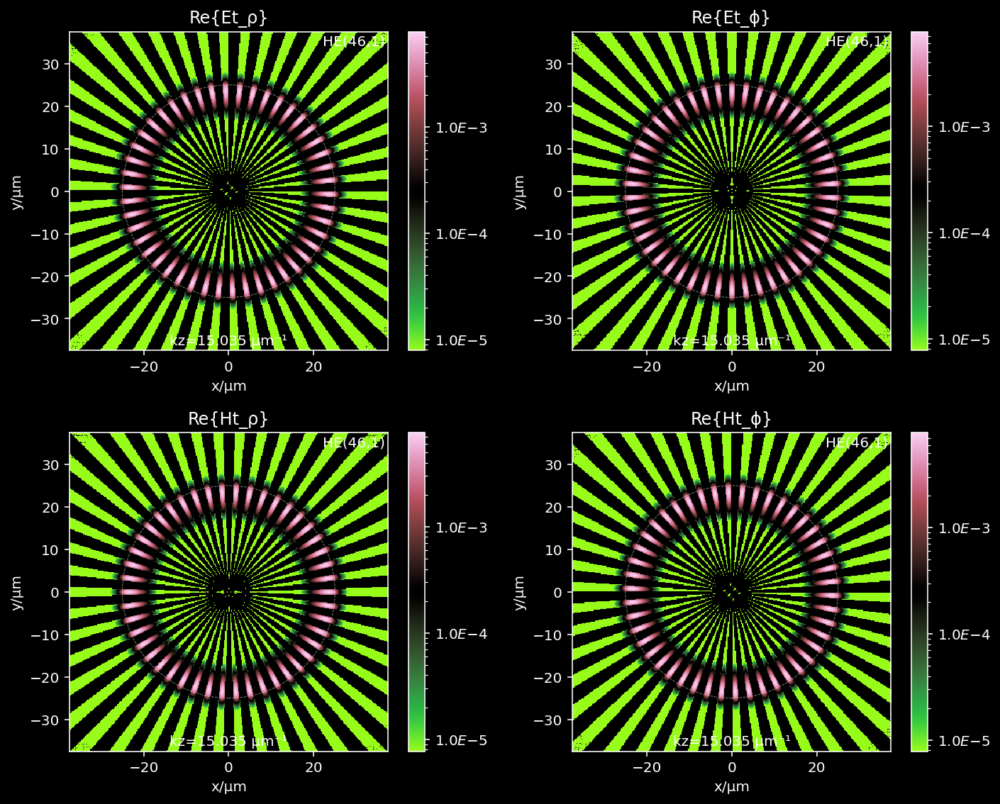
[ ]:
# plot and export all
plt.style.use('dark_background')
component_index = {"Et_ρ":(0,0), "Et_ϕ":(0,1), "Ht_ρ":(1,0), "Ht_ϕ":(1,1)}
extent = [-b,b,-b,b]
for index in tqdm(range(totalModes)):
for fun_picker in [np.abs, np.real]:
fig, axes = plt.subplots(nrows=2, ncols=2, figsize=(10,8))
if fun_picker in [np.real, np.imag]:
cmap = cm.watermelon
if fun_picker == np.real:
title_format = 'Re{%s}'
else:
title_format = 'Im{%s}'
else:
cmap = cm.ember
title_format = '|%s|'
for component, ci in component_index.items():
field = eigenbasis[index, ci[0], ci[1], :, :]
field = fun_picker(field)
if np.max(field) == 0 and fun_picker != np.abs:
if fun_picker == np.real:
fun_picker = np.imag
title_format = 'Im{%s}'
else:
fun_picker = np.real
title_format = 'Re{%s}'
field = fiber_sol['eigenbasis'][index, ci[0], ci[1], :, :]
field = fun_picker(field)
axis = axes[ci[0], ci[1]]
if fun_picker in [np.real, np.imag]:
themax = np.max(field)
vmax = themax
vmin = -themax
else:
vmax = np.max(field)
vmin = 0
iplot = axis.imshow(field,
vmin=vmin,
vmax=vmax,
extent=extent,
cmap=cmap)
axis.set_xlabel('x/µm')
axis.set_ylabel('y/µm')
axis.set_title(title_format % component)
axis.text(0.99, 0.99, annotations[index][0], color='w', transform=axis.transAxes, horizontalalignment='right', verticalalignment='top')
axis.text(0.5, 0.01, annotations[index][1], color='w', transform=axis.transAxes, horizontalalignment='center', verticalalignment='bottom')
circle = Circle((0,0), a, linestyle='--', edgecolor='white', facecolor='none', alpha=0.5, linewidth=0.5)
axis.add_patch(circle)
divider = make_axes_locatable(axis)
cax = divider.append_axes("right", size="5%", pad=0.2)
plt.colorbar(iplot, cax=cax, format=ticker.FuncFormatter(fmt))
plt.tight_layout()
if fun_picker in [np.real, np.imag]:
fname = './FG050LGA/reim/mode-%d.png' % index
else:
fname = './FG050LGA/abs/mode-%d.png' % index
plt.savefig(fname)
plt.close()
###Launching fields across the end of the waveguide¶
[7]:
totalModes = fiber_sol['totalModes']
λfree = fiber_sol['free_space_wavelength']
eigenbasis = fiber_sol['eigenbasis']
nCore = fiber_sol['nCore']
nCladding = fiber_sol['nCladding']
a, b, Δs, xrange, yrange, ρrange, φrange, Xg, Yg, ρg, φg, nxy, crossMask, numSamples = fiber_sol['coord_layout']
[8]:
annotations = []
for modtype in ['TE','TM','HE']:
solkey = modtype + 'kz'
for m, kzs in fiber_sol[solkey].items():
for kzidx, kz in enumerate(kzs):
γ = np.sqrt(nCore**2*4*np.pi**2/λfree**2 - kz**2)
β = np.sqrt(kz**2 - nCladding**2*4*np.pi**2/λfree**2)
annotationTR = '%s(%d,%d)' % (modtype, m, kzidx)
annotationBR = 'kz=%.3f µm⁻¹' % (kz)
annotations.append((annotationTR, annotationBR))
[9]:
indexPercent = 0.1
index = int(indexPercent * totalModes)
nFree = 1.0
annot = annotations[index]
# pick the E and H fields
Einc = eigenbasis[index, 0, :, :, :]
Hinc = np.conjugate(eigenbasis[index, 1, :, :, :])
kref, Eref, Href = ws.poyntingrefractor(Einc, Hinc, nFree, nxy, verbose=True)
Calculating the Poynting vector field...
Calculating the magnitude of the Poynting field...
Calculating the transverse component of the Poynting field...
Calculating the unit vector in the direction of the Poynting vector...
Calculating the angle of incidence field...
Calculating the angle of refraction field...
Calculating the Fresnel coefficients...
Calculating the ζ of the local coord system...
Calculating the S and P component of the incident electric field...
Calculating the S and P component of the refracted electric field...
Calculating the total refracted electric field...
Calculating the refracted wavevector (normalized) field...
Calculating the refracted H field...
###Convert cylindrical anchored to cartesian into cartesian anchored to cartesian¶
[10]:
a, b, Δs, xrange, yrange, ρrange, φrange, Xg, Yg, ρg, φg, nxy, crossMask, numSamples = fiber_sol['coord_layout']
[12]:
ccfield = ws.from_cyl_cart_to_cart_cart(Einc)
fig, ax = plt.subplots(figsize=(6,6))
ax.streamplot(Xg, Yg,
np.imag(ccfield[0]),
np.imag(ccfield[1]), arrowstyle='-', density=2)
ax.set_xlabel('x/µm')
ax.set_ylabel('y/µm')
ax.set_aspect('equal')
plt.show()
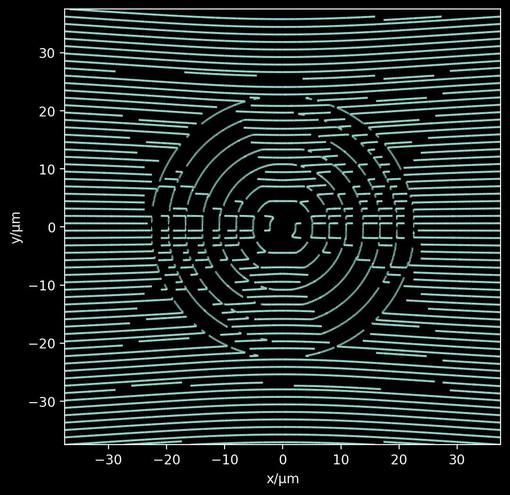
[ ]:
dummyfield = np.zeros(ccfield.shape)
dummyfield[0] = 1
dummyfield[1] = 0
dummyfield[2] = 0
ccfield = ws.from_cyl_cart_to_cart_cart(dummyfield)
fig, ax = plt.subplots(figsize=(6,6))
ax.streamplot(Xg, Yg,
np.real(ccfield[0]),
np.real(ccfield[1]), arrowstyle='-', density=2)
ax.set_xlabel('x/µm')
ax.set_ylabel('y/µm')
ax.set_aspect('equal')
plt.show()
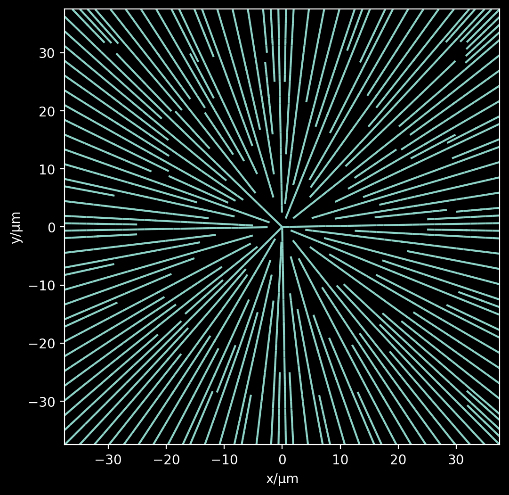
##Farfield propagation using the Rayleigh-Sommerfeld integral¶
[14]:
def doubleSlit(separation, width, height):
def apertureFun(x, y):
return np.where((
((np.abs(x - separation/2) <= width/2) | (np.abs(x + separation/2) <= width/2))
& (np.abs(y) <= height/2)
), 1, 0)
return apertureFun
slitSep = 4.
slitWidth = 1.
slitHeight = 10.
Lobs = 100.
z = 100
nref = 1
λfree = 0.532
numSamples = 'auto'
apFun = doubleSlit(slitSep, slitWidth, slitHeight)
# Estimate the diffraction pattern from the simplified formula
diforders = range(10)
xmaxi = []
for diforder in diforders:
stheta = diforder * λfree / slitSep
if stheta > 1:
break
else:
theta = np.arcsin(stheta)
xdif = z * np.tan(theta)
if np.abs(xdif) <= Lobs/2:
xmaxi.append(xdif)
xmaxi.append(-xdif)
numSamples, xCoords, yCoords, field = ws.scalarfieldprop(Lobs, z, apFun, λfree, nref, numSamples)
extent = (xCoords[0], xCoords[-1], yCoords[0], yCoords[-1])
pField = np.abs(field)
fig, ax = plt.subplots(figsize=(10,10))
ax.imshow(pField,
extent=extent,
cmap=cmr.ember,
interpolation='spline16')
ax.scatter(xmaxi, np.zeros_like(xmaxi), s=20, facecolors='none', edgecolors='w', alpha=0.5)
ax.set_xlabel('x/μm')
ax.set_ylabel('y/μm')
ax.set_title('Diffraction pattern of a double slit\ns=%.2fμm | w=%.2fμm | L=%.2fμm | Δz=%.2fμm' % (slitWidth, slitWidth, slitHeight, z))
plt.show()
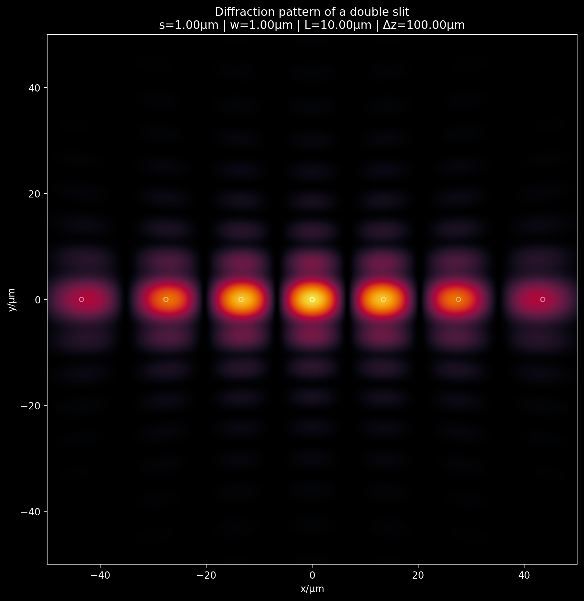
###Development code¶
[338]:
# def circleAp(radius):
# def apertureFun(x, y):
# r2 = x**2 + y**2
# return np.where(r2 < radius**2, 1, 0)
# return apertureFun
# apFun = circleAp(2.)
# apertureFunction = apFun
# def dot(width, xc, yc):
# def apertureFun(x, y):
# return np.where((np.abs(x - xc) <= width/2) & (np.abs(y + yc) <= width/2), 1, 0)
# return apertureFun
# apFun = dot(2, 0, 0)
# apertureFunction = apFun
[2]:
# def doubleSlit(separation, width, height):
# def apertureFun(x, y):
# return np.where((
# ((np.abs(x - separation/2) <= width/2) | (np.abs(x + separation/2) <= width/2))
# & (np.abs(y) <= height/2)
# ), 1, 0)
# return apertureFun
# slitSep = 4.
# slitWidth = 1.
# slitHeight = 10.
# apFun = doubleSlit(slitSep, slitWidth, slitHeight)
# apertureFunction = apFun
# Lobs = 100.
# z = 30.
# nref = 1
# λfree = 0.5
# numSamples = 'auto'
# λ = λfree / nref
# k = 2*np.pi/λ
# # Estimate the diffraction pattern from the simplified formula
# diforders = range(10)
# xmaxi = []
# for diforder in diforders:
# stheta = diforder * λfree / slitSep
# if stheta > 1:
# break
# else:
# theta = np.arcsin(stheta)
# xdif = z * np.tan(theta)
# if np.abs(xdif) <= Lobs/2:
# xmaxi.append(xdif)
# xmaxi.append(-xdif)
# def gr(r):
# return (np.exp(1j * k * r) * z) * (1./r - 1j*k) / (2*np.pi * r**2)
# if numSamples == 'auto':
# numSamples = round(2*Lobs/λ)
# else:
# numSamples = numSamples
# apertureSamples = numSamples
# Lap = Lobs
# k = 2. * np.pi / λ
# Δζ = Lap / apertureSamples
# Δη = Δζ
# # ζ, η are coordinates in the source plane
# ζ = np.linspace(-Lap/2, Lap/2, apertureSamples)
# η = np.linspace(-Lap/2, Lap/2, apertureSamples)
# # x, y are coordinates in the observation plane
# x = np.linspace(-Lobs/2, Lobs/2, numSamples)
# y = np.linspace(-Lobs/2, Lobs/2, numSamples)
# ζmesh, ηmesh = np.meshgrid(ζ, η)
# xmesh, ymesh = np.meshgrid(x, y)
# padextra = (2*apertureSamples - 1) - numSamples
# # Put together the U array
# U = apertureFunction(ζmesh, ηmesh)
# U = np.pad(U,
# pad_width=((0,padextra),(0,padextra)),
# mode='constant',
# constant_values=0.)
# # Put together the H array
# Hx1 = np.full((apertureSamples-1, 2*apertureSamples-1), x[0])
# Hx2 = np.tile(x, (2*apertureSamples-1,1)).T
# Hx = np.concatenate((Hx1, Hx2))
# Hζ2 = np.full((apertureSamples-1, 2*apertureSamples-1), ζ[0])
# Hζ1 = np.tile(ζ[::-1], (2*apertureSamples - 1,1)).T
# Hζ = np.concatenate((Hζ1, Hζ2)).T
# Hxζ = Hx - Hζ.T
# Hy1 = np.full((apertureSamples-1, 2*apertureSamples-1), y[0])
# Hy2 = np.tile(y, (2*apertureSamples-1,1)).T
# Hy = np.concatenate((Hy1, Hy2))
# Hη2 = np.full((apertureSamples-1, 2*apertureSamples-1), η[0])
# Hη1 = np.tile(η[::-1], (2*apertureSamples - 1,1)).T
# Hη = np.concatenate((Hη1, Hη2)).T
# Hyη = Hy - Hη.T
# Hyη = Hyη.T
# # calculate r
# rEva = np.sqrt(Hxζ**2 + Hyη**2 + z**2)
# H = gr(rEva)
# FFU = fft2(U)
# FFH = fft2(H)
# FFUH = FFU * FFH
# S = ifft2(FFUH)
# # get the good parts
# field = (Δη*Δζ) * S[-apertureSamples::,-apertureSamples::]
# extent = (x[0], x[-1], y[0], y[-1])
# pField = np.abs(field)
# fig, ax = plt.subplots(figsize=(10,10))
# ax.imshow(pField,
# extent=extent,
# cmap=cmr.ember,
# interpolation='spline16')
# ax.scatter(xmaxi, np.zeros_like(xmaxi), s=20, facecolors='none', edgecolors='w', alpha=0.5)
# ax.set_xlabel('x/μm')
# ax.set_ylabel('y/μm')
# ax.set_title('Diffraction pattern of a double slit\ns=%.2fμm | w=%.2fμm | L=%.2fμm' % (slitWidth, slitWidth, slitHeight))
# plt.show()
[12]:
# def scalarfieldprop(Lobs, z, apertureFunction, λfree, nref, numSamples='auto'):
# '''
# scalarfieldprop takes a field component in an aperture plane and
# propagates that to an observation plane by using an implementation
# of the direct integration of the Rayleigh-Sommerfeld diffraction
# integral. This implementation is based on the method described in
# Shen and Wang (2006). The field is sampled in the aperture plane and
# in the obserbation plane using a uniform grid. The field is assumed
# to be zero outside of the aperture plane.
# Parameters
# ----------
# + Lobs (float): spatial width of the obsevation region, in μm. The
# observation region is assumed to be a squared centered on (x,y) =
# (0,0), and extending from -Lobs/2 to Lobs/2 in both the x and y
# directions.
# + z (float): distance between the aperture plane and the observation
# plane, given in μm. The aperture plane is assumed to be at z=0.
# + apertureFunction (function): a bi-variate function that returns
# the complex amplitude of the field in the aperture plane. Input to
# the function is assumed to be in cartesian coordinates x,y. If the
# function has an attribute "null" set to True, then the function will
# simply return a matrix of zeros.
# + λfree (float): wavelength in vaccum of field, given in μm.
# + nref (float): refractive index of the propagating medium.
# Options
# -------
# + "numSamples" (int or Automatic): number of samples to use in the
# aperture plane and the observation plane. The aperture plane is
# sampled using a uniform grid, and the observation plane is also
# sampled using a uniform grid. The default is Automatic in which case
# numSamples is calculated so that the sample size is equal to half
# the wavelength of the wave inside of the propagating medium.
# Returns
# -------
# (numSamples, xCoords, yCoords, field) (tuple)
# + xCoords (np.array): x coordinates of the observation plane, given
# in μm.
# + yCoords (np.array): y coordinates of the observation plane, given
# in μm.
# + field (np.array): complex amplitude of the field in the
# observation plane. The top left corner of the array corresponds to
# the lower left corner of the observation plane. The coordinates
# associated with each element in the given array should be taken from
# xCoords and yCoords.
# References
# ----------
# + Shen, Fabin, and Anbo Wang. "Fast-Fourier-transform based
# numerical integration method for the Rayleigh-Sommerfeld diffraction
# formula." Applied optics 45, no. 6 (2006): 1102-1110.
# Example (double slit):
# ----------------------
# def doubleSlit(separation, width, height):
# def apertureFun(x, y):
# return np.where((
# ((np.abs(x - separation/2) <= width/2) | (np.abs(x + separation/2) <= width/2))
# & (np.abs(y) <= height/2)
# ), 1, 0)
# return apertureFun
# slitSep = 4.
# slitWidth = 1.
# slitHeight = 10.
# Lobs = 100.
# z = 100
# nref = 1
# λfree = 0.532
# numSamples = 'auto'
# apFun = doubleSlit(slitSep, slitWidth, slitHeight)
# # Estimate the diffraction pattern from the simplified formula
# diforders = range(10)
# xmaxi = []
# for diforder in diforders:
# stheta = diforder * λfree / slitSep
# if stheta > 1:
# break
# else:
# theta = np.arcsin(stheta)
# xdif = z * np.tan(theta)
# if np.abs(xdif) <= Lobs/2:
# xmaxi.append(xdif)
# xmaxi.append(-xdif)
# numSamples, xCoords, yCoords, field = scalarfieldprop(Lobs, z, apFun, λfree, nref, numSamples)
# extent = (xCoords[0], xCoords[-1], yCoords[0], yCoords[-1])
# pField = np.abs(field)
# fig, ax = plt.subplots(figsize=(10,10))
# ax.imshow(pField,
# extent=extent,
# cmap=cmr.ember,
# interpolation='spline16')
# ax.scatter(xmaxi, np.zeros_like(xmaxi), s=20, facecolors='none', edgecolors='w', alpha=0.5)
# ax.set_xlabel('x/μm')
# ax.set_ylabel('y/μm')
# ax.set_title('Diffraction pattern of a double slit\ns=%.2fμm | w=%.2fμm | L=%.2fμm | Δz=%.2fμm' % (slitWidth, slitWidth, slitHeight, z))
# plt.show()
# '''
# assert z>=0, 'z must be positive'
# λ = λfree / nref
# k = 2*np.pi/λ
# def gr(r):
# return (np.exp(1j * k * r) * z) * (1./r - 1j*k) / (2*np.pi * r**2)
# if numSamples == 'auto':
# numSamples = round(2*Lobs/λ)
# else:
# numSamples = numSamples
# apertureSamples = numSamples
# Lap = Lobs
# k = 2. * np.pi / λ
# Δζ = Lap / apertureSamples
# Δη = Δζ
# # ζ, η are coordinates in the source plane
# ζCoords = np.linspace(-Lap/2, Lap/2, apertureSamples)
# ηCoords = np.linspace(-Lap/2, Lap/2, apertureSamples)
# # x, y are coordinates in the observation plane
# xCoords = np.linspace(-Lobs/2, Lobs/2, numSamples)
# yCoords = np.linspace(-Lobs/2, Lobs/2, numSamples)
# # An override to help the cases in vector field propagation
# # where some field component is identically zero
# if hasattr(apertureFunction, 'null'):
# if apertureFunction.null:
# return (numSamples, xCoords, yCoords, np.zeros((numSamples, numSamples)))
# ζmesh, ηmesh = np.meshgrid(ζCoords, ηCoords)
# padextra = (2*apertureSamples - 1) - numSamples
# # Put together the U array
# U = apertureFunction(ζmesh, ηmesh)
# # if z=0 there's nothing to do and the same input field should be returned
# if z == 0:
# return (numSamples, xCoords, yCoords, U)
# U = np.pad(U,
# pad_width=((0,padextra),(0,padextra)),
# mode='constant',
# constant_values=0.)
# x0 = xCoords[0]
# y0 = yCoords[0]
# η0 = ηCoords[0]
# ζ0 = ζCoords[0]
# # Put together the H array
# Hx1 = np.full((apertureSamples-1, 2*apertureSamples-1), x0)
# Hx2 = np.tile(xCoords, (2*apertureSamples-1,1)).T
# Hx = np.concatenate((Hx1, Hx2))
# Hζ2 = np.full((apertureSamples-1, 2*apertureSamples-1), ζ0)
# Hζ1 = np.tile(ζCoords[::-1], (2*apertureSamples - 1,1)).T
# Hζ = np.concatenate((Hζ1, Hζ2)).T
# Hxζ = Hx - Hζ.T
# Hy1 = np.full((apertureSamples-1, 2*apertureSamples-1), y0)
# Hy2 = np.tile(yCoords, (2*apertureSamples-1,1)).T
# Hy = np.concatenate((Hy1, Hy2))
# Hη2 = np.full((apertureSamples-1, 2*apertureSamples-1), η0)
# Hη1 = np.tile(ηCoords[::-1], (2*apertureSamples - 1,1)).T
# Hη = np.concatenate((Hη1, Hη2)).T
# Hyη = (Hy - Hη.T).T
# # calculate r
# rEva = np.sqrt(Hxζ**2 + Hyη**2 + z**2)
# # evaluate gr
# H = gr(rEva)
# # compute the Fourier transforms
# FFU = fft2(U)
# FFH = fft2(H)
# # perform the convolution
# FFUH = FFU * FFH
# # invert the result
# S = ifft2(FFUH)
# # get the good parts
# field = (Δη*Δζ) * S[-apertureSamples::,-apertureSamples::]
# return (numSamples, xCoords, yCoords, field)
[13]:
def doubleSlit(separation, width, height):
def apertureFun(x, y):
return np.where((
((np.abs(x - separation/2) <= width/2) | (np.abs(x + separation/2) <= width/2))
& (np.abs(y) <= height/2)
), 1, 0)
return apertureFun
slitSep = 4.
slitWidth = 1.
slitHeight = 10.
Lobs = 100.
z = 100
nref = 1
λfree = 0.532
numSamples = 'auto'
apFun = doubleSlit(slitSep, slitWidth, slitHeight)
# Estimate the diffraction pattern from the simplified formula
diforders = range(10)
xmaxi = []
for diforder in diforders:
stheta = diforder * λfree / slitSep
if stheta > 1:
break
else:
theta = np.arcsin(stheta)
xdif = z * np.tan(theta)
if np.abs(xdif) <= Lobs/2:
xmaxi.append(xdif)
xmaxi.append(-xdif)
numSamples, xCoords, yCoords, field = scalarfieldprop(Lobs, z, apFun, λfree, nref, numSamples)
extent = (xCoords[0], xCoords[-1], yCoords[0], yCoords[-1])
pField = np.abs(field)
fig, ax = plt.subplots(figsize=(10,10))
ax.imshow(pField,
extent=extent,
cmap=cmr.ember,
interpolation='spline16')
ax.scatter(xmaxi, np.zeros_like(xmaxi), s=20, facecolors='none', edgecolors='w', alpha=0.5)
ax.set_xlabel('x/μm')
ax.set_ylabel('y/μm')
ax.set_title('Diffraction pattern of a double slit\ns=%.2fμm | w=%.2fμm | L=%.2fμm | Δz=%.2fμm' % (slitWidth, slitWidth, slitHeight, z))
plt.show()
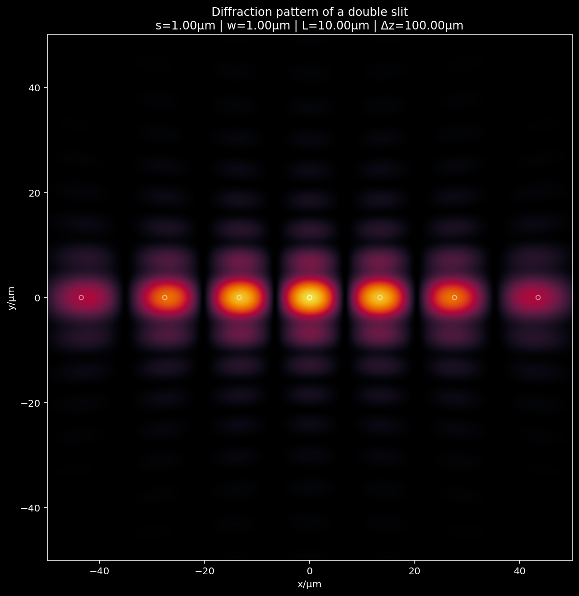
[14]:
# def vectorfieldprop(Lobs, z, apertureFunctions, λfree, nref, numSamples='auto'):
# '''
# vectorfieldprop takes a field with three cartesian components in an
# aperture plane and propagates that to an observation plane by using
# an implementation of the direct integration of the Rayleigh-
# Sommerfeld diffraction integral. This implementation is based on the
# method described in Shen and Wang (2006). The field is sampled in
# the aperture plane and in the obserbation plane using a uniform
# grid. The field is assumed to be zero outside of the aperture plane.
# No checks are made that the given field components constitute a
# valid electromagnetic field. It assumes that the refractive index is
# isotropic.
# Parameters
# ----------
# + Lobs (float): spatial width of the obsevation region, in μm. The
# observation region is assumed to be a squared centered on (x,y) =
# (0,0), and extending from -Lobs/2 to Lobs/2 in both the x and y
# directions.
# + z (float): distance between the aperture plane and the observation
# plane, given in μm. The aperture plane is assumed to be at z=0.
# + apertureFunctions (tuple): a tuple with three bi-variate functions
# which return the complex amplitude of the corresponding field
# cartesian component in the aperture plane. Input to the functions is
# assumed to be in cartesian coordinates x,y. If the function has an
# attribute "null" set to True, then the function will simply return a
# matrix of zeros.
# + λfree (float): wavelength in vaccum of field, given in μm.
# + nref (float): refractive index of the propagating medium.
# Options
# -------
# + "numSamples" (int or Automatic): number of samples to use in the
# aperture plane and the observation plane. The aperture plane is
# sampled using a uniform grid, and the observation plane is also
# sampled using a uniform grid. The default is Automatic in which case
# numSamples is calculated so that the sample size is equal to half
# the wavelength of the wave inside of the propagating medium.
# Returns
# -------
# (numSamples, xCoords, yCoords, field) (tuple)
# + xCoords (np.array): x coordinates of the observation plane, given
# in μm.
# + yCoords (np.array): y coordinates of the observation plane, given
# in μm.
# + fields (np.array): with shape (3, numSamples, numSamples) where
# the first index takes values 0, 1, 2 for the x, y, and z cartesian
# components and the second two indices are anchored to positions in
# the obervation plane according to xCoords and yCoords. The top left
# corner of the array corresponds to the lower left corner of the
# observation plane.
# References
# ----------
# + Shen, Fabin, and Anbo Wang. "Fast-Fourier-transform based
# numerical integration method for the Rayleigh-Sommerfeld diffraction
# formula." Applied optics 45, no. 6 (2006): 1102-1110.
# '''
# λ = λfree / nref
# if numSamples == 'auto':
# numSamples = round(2*Lobs/λ)
# else:
# numSamples = numSamples
# fields = np.zeros((3, numSamples, numSamples), dtype=complex)
# for field_idx, apertureFunction in enumerate(apertureFunctions):
# (numSamples, xCoords, yCoords, field) = scalarfieldprop(Lobs, z, apertureFunction, λfree, nref, numSamples)
# fields[field_idx] = field
# return (numSamples, xCoords, yCoords, fields)
[41]:
def doubleSlit(separation, width, height, phase=1):
def apertureFun(x, y):
return phase*np.where((
((np.abs(x - separation/2) <= width/2) | (np.abs(x + separation/2) <= width/2))
& (np.abs(y) <= height/2)
), 1, 0)
return apertureFun
slitSep = 4.
slitWidth = 1.
slitHeight = 10.
Lobs = 100.
z = 100
nref = 1
λfree = 0.532
numSamples = 'auto'
apFunx = doubleSlit(slitSep, slitWidth, slitHeight)
apFuny = doubleSlit(slitSep, slitWidth, slitHeight, phase=1j)
apFunz = doubleSlit(slitSep, slitWidth, slitHeight)
apFunz.null = True
apFuns = (apFunx, apFuny, apFunz)
# Estimate the diffraction pattern from the simplified formula
diforders = range(10)
xmaxi = []
for diforder in diforders:
stheta = diforder * λfree / slitSep
if stheta > 1:
break
else:
theta = np.arcsin(stheta)
xdif = z * np.tan(theta)
if np.abs(xdif) <= Lobs/2:
xmaxi.append(xdif)
xmaxi.append(-xdif)
numSamples, xCoords, yCoords, fields = vectorfieldprop(Lobs, z, apFuns, λfree, nref, numSamples)
extent = (xCoords[0], xCoords[-1], yCoords[0], yCoords[-1])
fig, axes = plt.subplots(ncols=2, figsize=(20,10))
for field_idx in [0,1]:
pField = np.real(fields[field_idx])
ax = axes[field_idx]
maxi = np.max(pField)
ax.imshow(pField,
extent=extent,
cmap=cmr.wildfire,
vmin=-maxi,
vmax=maxi,
interpolation='spline16')
ax.scatter(xmaxi, np.zeros_like(xmaxi), s=20, facecolors='none', edgecolors='w', alpha=0.5)
ax.set_xlabel('x/μm')
ax.set_ylabel('y/μm')
ax.set_title('Diffraction pattern of a double slit | Re(F_%s)\ns=%.2fμm | w=%.2fμm | L=%.2fμm | Δz=%.2fμm' % (['x','y'][field_idx], slitWidth, slitWidth, slitHeight, z))
plt.show()
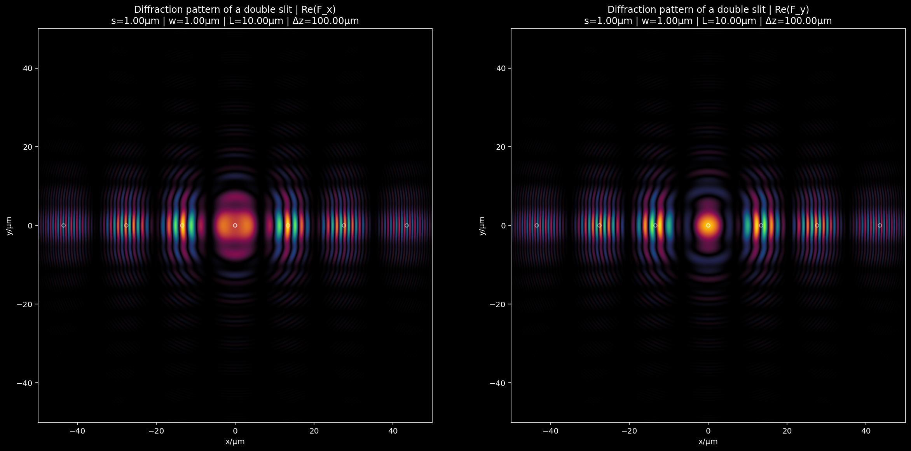
###Farfield propagation¶
[311]:
field = Eref
replicas = 1
L = b*2 # lateral extension of the field, assumed square
dz = 10 # farfield axial resolution
farfield_extent = 1000.
λmedium = λfree
field = ws.from_cyl_cart_to_cart_cart(field)
farfield_zaxis, farfield = ws.farfield_projector(field, L, λfree, farfield_extent, dz, replicas=replicas)
[341]:
# simply grab the xz plane
mid_lateral_index = farfield.shape[-1] // 2
xz_field = farfield[:, :, :, mid_lateral_index]
xz_energy_density = np.sum(np.abs(xz_field) ** 2, axis=0)
extra_b = b * replicas
[352]:
!mkdir someplots
[356]:
for idx in range(farfield.shape[1]):
last_field = farfield[:,idx,:,:]
last_field_energy_density = np.sum(np.abs(last_field) ** 2, axis=0)
stridx = str(idx).zfill(3)
plt.figure()
plt.imshow(last_field_energy_density, cmap=cm.ember)
plt.savefig(f'./someplots/farfield_{stridx}.png')
plt.close()
[354]:
!open .
[339]:
nearfield_density = np.sum(np.abs(field)**2, axis=0)
diameter_axis = np.linspace(-b,b,nearfield_density.shape[0])
diameter_density = nearfield_density[nearfield_density.shape[0]//2,:]
diameter_density /= np.max(diameter_density)
[340]:
plt.figure(figsize=(12,10))
plt.imshow(xz_energy_density,
extent=[-extra_b, extra_b , 0, farfield_zaxis[-1]],
origin='lower',
cmap=cm.ember)
plt.plot(diameter_axis, diameter_density*3, 'w+')
plt.plot([-a,a],[0,0],'wo',label='|E_incident|^2')
# plt.xlim(-10, 10)
plt.ylim(0,300)
plt.xlabel('x/µm')
plt.ylabel('z/µm')
plt.show()
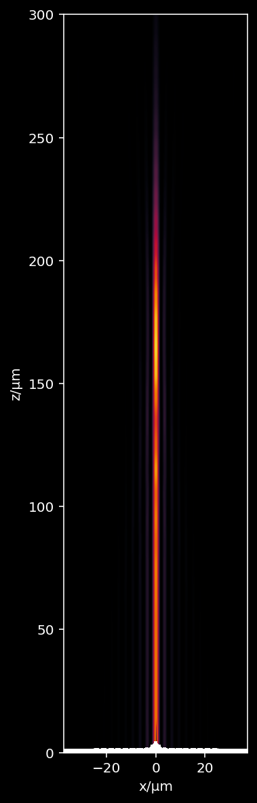
[327]:
energies = np.sum(np.sum(np.sum(np.abs(farfield)**2, axis=0),axis=1), axis=1)
[334]:
plt.figure(figsize=(10,3))
plt.plot(energies,'wx')
plt.show()
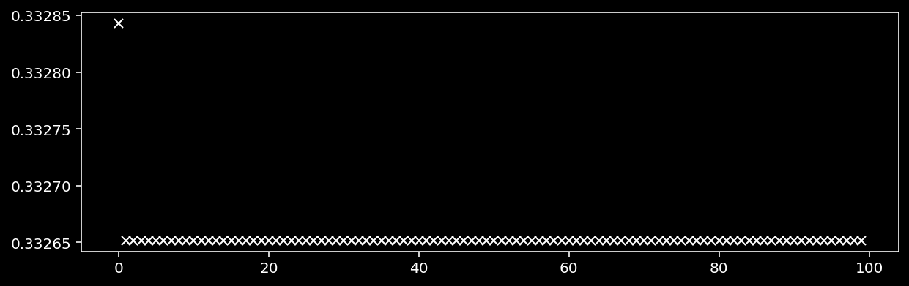
###Angular-Spectrum Farfield Approximator¶
[389]:
fiber_sol = pickle.load(open('eigenbasis-FG050LGA.pkl', 'rb'))
fiber_sol['coord_layout'] = ws.coordinate_layout(fiber_sol)
totalModes = fiber_sol['totalModes']
λfree = fiber_sol['free_space_wavelength']
eigenbasis = fiber_sol['eigenbasis']
nCore = fiber_sol['nCore']
nCladding = fiber_sol['nCladding']
a, b, Δs, xrange, yrange, ρrange, φrange, Xg, Yg, ρg, φg, nxy, crossMask, numSamples = fiber_sol['coord_layout']
indexPercent = 0.2
index = int(indexPercent * totalModes)
nFree = fiber_sol['nFree']
annot = annotations[index]
# pick the E and H fields
Einc = eigenbasis[index, 0, :, :, :]
Hinc = np.conjugate(eigenbasis[index, 1, :, :, :])
kref, Eref, Href = ws.poyntingrefractor(Einc, Hinc, nFree, nxy, verbose=True)
Calculating the Poynting vector field...
Calculating the magnitude of the Poynting field...
Calculating the transverse component of the Poynting field...
Calculating the unit vector in the direction of the Poynting vector...
Calculating the angle of incidence field...
Calculating the angle of refraction field...
Calculating the Fresnel coefficients...
Calculating the ζ of the local coord system...
Calculating the S and P component of the incident electric field...
Calculating the S and P component of the refracted electric field...
Calculating the total refracted electric field...
Calculating the refracted wavevector (normalized) field...
Calculating the refracted H field...
[390]:
field = Eref
field = ws.from_cyl_cart_to_cart_cart(field)
[391]:
λfree = fiber_sol['free_space_wavelength']
nMedium = fiber_sol['nFree']
Zi = 0
Zf = 100
si = 2*b # the size of the nearfield
sf = 2*si # the size of the farfield
Efar = ws.angular_farfield_propagator(Eref, λfree, nMedium, Zf, Zi, si, sf)
ATTENTION: 91.9 = (rmax - rmin) / λmedium > 1. The angular spectrum approximation is problematic.
Consider decreasing si, decreasing sf, or increasing Zf.
[392]:
plotField = np.sum(np.abs(Efar)**2, axis=0)
extent = [-sf/2, sf/2, -sf/2, sf/2]
fig, ax = plt.subplots(figsize=(10,10))
ishow = ax.imshow(plotField,
extent=extent,
cmap=cm.ember)
fig.colorbar(ishow, ax=ax, extend='neither')
circle = Circle((0,0), a, linestyle='--',
edgecolor='white',
facecolor='none',
alpha=0.5, linewidth=0.5)
ax.add_patch(circle)
plt.xlabel('x/µm')
plt.ylabel('y/µm')
plt.title('|Efar|^2')
plt.show()

[384]:
# plot a general layout of what is being propagatd
fig, ax = plt.subplots(figsize=(6,6))
plt.plot([-si/2,si/2],[Zi,Zi],'w:')
plt.plot([-sf/2,sf/2],[Zf,Zf],'w--')
plt.xlabel('x/µm')
plt.ylabel('z/µm')
ax.set_aspect('equal')
plt.show()
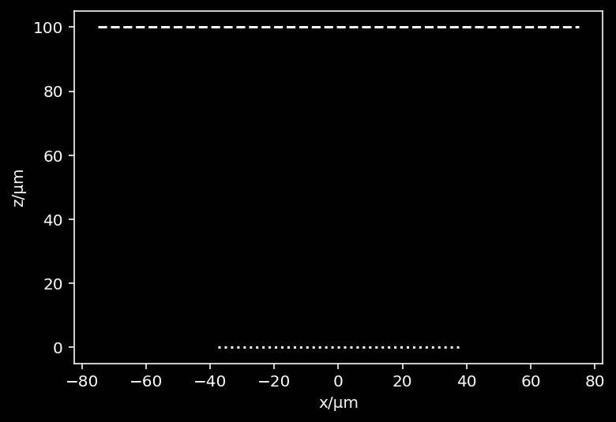
[387]:
plotField = np.sum(np.abs(field**2), axis=0)
# plotField = np.real(Eref[2])
extent = [-b, b, -b, b]
fig, ax = plt.subplots(figsize=(10,10))
ishow = ax.imshow(plotField,
extent=extent,
cmap=cm.ember)
fig.colorbar(ishow, ax=ax, extend='neither')
circle = Circle((0,0), a, linestyle='--',
edgecolor='white',
facecolor='none',
alpha=0.5, linewidth=0.5)
ax.add_patch(circle)
plt.xlabel('x/µm')
plt.ylabel('y/µm')
plt.title('|(E_near)|^2')
plt.show()

[393]:
[393]:
array([0. , 0.11111111, 0.22222222, 0.33333333, 0.44444444,
0.55555556, 0.66666667, 0.77777778, 0.88888889, 1. ])
[395]:
fiber_sol = pickle.load(open('eigenbasis-FG050LGA.pkl', 'rb'))
fiber_sol['coord_layout'] = ws.coordinate_layout(fiber_sol)
totalModes = fiber_sol['totalModes']
λfree = fiber_sol['free_space_wavelength']
eigenbasis = fiber_sol['eigenbasis']
nCore = fiber_sol['nCore']
nCladding = fiber_sol['nCladding']
a, b, Δs, xrange, yrange, ρrange, φrange, Xg, Yg, ρg, φg, nxy, crossMask, numSamples = fiber_sol['coord_layout']
[406]:
farfields = []
annots = []
for indexPercent in tqdm(np.linspace(0,1,25)):
index = int(indexPercent * totalModes)
if indexPercent == 1:
index = totalModes - 1
nFree = fiber_sol['nFree']
annot = annotations[index]
annots.append(annot)
# pick the E and H fields
Einc = eigenbasis[index, 0, :, :, :]
Hinc = np.conjugate(eigenbasis[index, 1, :, :, :])
kref, Eref, Href = ws.poyntingrefractor(Einc, Hinc, nFree, nxy, verbose=False)
field = Eref
field = ws.from_cyl_cart_to_cart_cart(field)
λfree = fiber_sol['free_space_wavelength']
nMedium = fiber_sol['nFree']
Zi = 0
Zf = 100
si = 2*b # the size of the nearfield
sf = 2*si # the size of the farfield
Efar = ws.angular_farfield_propagator(Eref, λfree, nMedium, Zf, Zi, si, sf)
farfields.append(Efar)
ATTENTION: 91.9 = (rmax - rmin) / λmedium > 1. The angular spectrum approximation is problematic.
Consider decreasing si, decreasing sf, or increasing Zf.
ATTENTION: 91.9 = (rmax - rmin) / λmedium > 1. The angular spectrum approximation is problematic.
Consider decreasing si, decreasing sf, or increasing Zf.
ATTENTION: 91.9 = (rmax - rmin) / λmedium > 1. The angular spectrum approximation is problematic.
Consider decreasing si, decreasing sf, or increasing Zf.
ATTENTION: 91.9 = (rmax - rmin) / λmedium > 1. The angular spectrum approximation is problematic.
Consider decreasing si, decreasing sf, or increasing Zf.
ATTENTION: 91.9 = (rmax - rmin) / λmedium > 1. The angular spectrum approximation is problematic.
Consider decreasing si, decreasing sf, or increasing Zf.
ATTENTION: 91.9 = (rmax - rmin) / λmedium > 1. The angular spectrum approximation is problematic.
Consider decreasing si, decreasing sf, or increasing Zf.
ATTENTION: 91.9 = (rmax - rmin) / λmedium > 1. The angular spectrum approximation is problematic.
Consider decreasing si, decreasing sf, or increasing Zf.
ATTENTION: 91.9 = (rmax - rmin) / λmedium > 1. The angular spectrum approximation is problematic.
Consider decreasing si, decreasing sf, or increasing Zf.
ATTENTION: 91.9 = (rmax - rmin) / λmedium > 1. The angular spectrum approximation is problematic.
Consider decreasing si, decreasing sf, or increasing Zf.
ATTENTION: 91.9 = (rmax - rmin) / λmedium > 1. The angular spectrum approximation is problematic.
Consider decreasing si, decreasing sf, or increasing Zf.
ATTENTION: 91.9 = (rmax - rmin) / λmedium > 1. The angular spectrum approximation is problematic.
Consider decreasing si, decreasing sf, or increasing Zf.
ATTENTION: 91.9 = (rmax - rmin) / λmedium > 1. The angular spectrum approximation is problematic.
Consider decreasing si, decreasing sf, or increasing Zf.
ATTENTION: 91.9 = (rmax - rmin) / λmedium > 1. The angular spectrum approximation is problematic.
Consider decreasing si, decreasing sf, or increasing Zf.
ATTENTION: 91.9 = (rmax - rmin) / λmedium > 1. The angular spectrum approximation is problematic.
Consider decreasing si, decreasing sf, or increasing Zf.
ATTENTION: 91.9 = (rmax - rmin) / λmedium > 1. The angular spectrum approximation is problematic.
Consider decreasing si, decreasing sf, or increasing Zf.
ATTENTION: 91.9 = (rmax - rmin) / λmedium > 1. The angular spectrum approximation is problematic.
Consider decreasing si, decreasing sf, or increasing Zf.
ATTENTION: 91.9 = (rmax - rmin) / λmedium > 1. The angular spectrum approximation is problematic.
Consider decreasing si, decreasing sf, or increasing Zf.
ATTENTION: 91.9 = (rmax - rmin) / λmedium > 1. The angular spectrum approximation is problematic.
Consider decreasing si, decreasing sf, or increasing Zf.
ATTENTION: 91.9 = (rmax - rmin) / λmedium > 1. The angular spectrum approximation is problematic.
Consider decreasing si, decreasing sf, or increasing Zf.
ATTENTION: 91.9 = (rmax - rmin) / λmedium > 1. The angular spectrum approximation is problematic.
Consider decreasing si, decreasing sf, or increasing Zf.
ATTENTION: 91.9 = (rmax - rmin) / λmedium > 1. The angular spectrum approximation is problematic.
Consider decreasing si, decreasing sf, or increasing Zf.
ATTENTION: 91.9 = (rmax - rmin) / λmedium > 1. The angular spectrum approximation is problematic.
Consider decreasing si, decreasing sf, or increasing Zf.
ATTENTION: 91.9 = (rmax - rmin) / λmedium > 1. The angular spectrum approximation is problematic.
Consider decreasing si, decreasing sf, or increasing Zf.
ATTENTION: 91.9 = (rmax - rmin) / λmedium > 1. The angular spectrum approximation is problematic.
Consider decreasing si, decreasing sf, or increasing Zf.
ATTENTION: 91.9 = (rmax - rmin) / λmedium > 1. The angular spectrum approximation is problematic.
Consider decreasing si, decreasing sf, or increasing Zf.
[414]:
extent = [-sf/2, sf/2, -sf/2, sf/2]
fig, axes = plt.subplots(nrows=5, ncols=5, figsize=(20,20))
for i in range(5):
for j in range(5):
ax = axes[i,j]
Efar = farfields[i*5+j]
plotField = np.sum(np.abs(Efar)**2, axis=0)
ishow = ax.imshow(plotField,
norm=colors.LogNorm(),
extent=extent,
cmap=cm.ember)
#fig.colorbar(ishow, ax=ax, extend='neither')
# circle = Circle((0,0), a, linestyle='--',
# edgecolor='white',
# facecolor='none',
# alpha=0.5, linewidth=0.5)
# ax.add_patch(circle)
if i == 4:
ax.set_xlabel('x/µm')
if j == 0:
ax.set_ylabel('y/µm')
plt.show()
/Users/juan/opt/anaconda3/lib/python3.8/site-packages/matplotlib/image.py:446: UserWarning: Warning: converting a masked element to nan.
dv = np.float64(self.norm.vmax) - np.float64(self.norm.vmin)
/Users/juan/opt/anaconda3/lib/python3.8/site-packages/matplotlib/image.py:453: UserWarning: Warning: converting a masked element to nan.
a_min = np.float64(newmin)
/Users/juan/opt/anaconda3/lib/python3.8/site-packages/matplotlib/image.py:458: UserWarning: Warning: converting a masked element to nan.
a_max = np.float64(newmax)

####Playing around with DFT¶
[243]:
numSamples = 25
dummyx = np.linspace(0, 10, numSamples)
# on this domain let's sample a function which is sin(k*x)
# with k = 2\
dummyy = np.sin(2*dummyx)
spatialFrequencies = 2*np.pi * np.fft.fftshift(np.fft.fftfreq(numSamples, d=dummyx[1]-dummyx[0]))
discreteTransform = np.fft.fftshift(np.fft.fft(dummyy))
plt.figure()
plt.plot(dummyx, dummyy,'o')
plt.show()
plt.figure()
plt.plot(spatialFrequencies, np.abs(discreteTransform),'o-')
plt.show()

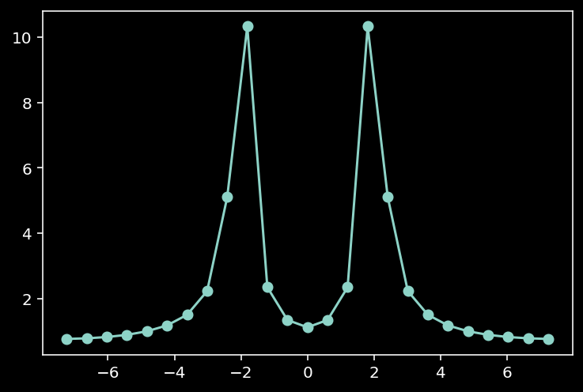
####Spaguetti code¶
[ ]:
# given a field (Ex, Ey, Ez) at a plane calculate the discrete
# fourier transform of the field in the x,y,z directions
# this would provide the field in the frequency domain
# the field is assumed to be periodic in the x,y,z directions
fiberfield_t = np.copy(eigenbasis[0,0,:,:,:])
# at the moment I haven't calculate the z component of the field
# let me just assume a z component that is roughly of the same magnitude
# of the x and y components, that starts normal at the center and
# deviates to the NA of the fiber at the edge of it
[ ]:
Ex = fiberfield_t[0,:,:]
Ey = fiberfield_t[1,:,:]
NA = fiber_sol['NA']
nCore = fiber_sol['nCore']
a = fiber_sol['coreRadius']
thetamax = np.arcsin(NA/nCore)
# calculate the magnitude of the transverse field
r = np.sqrt(Xg**2+Yg**2)
# calculate the angle of E at each point
launchAngle = thetamax/a * r
# knowing the angle at each position I should be able to "calculate"
# the z component of the field
# this doesn't make any sense, the direction of the
# electric field is not the direction of the wave vector
# ok, instead let me estimate the direction of the wave vector
# across the fiber and then use that together with the field at
# each position to determine what is a compatible value for the z component
kmag = 2*np.pi/λfree*nCore
dirfield = np.arctan2(Yg, Xg)
xhat = np.cos(dirfield)
yhat = np.sin(dirfield)
kz = kmag * np.cos(launchAngle)
kx = kmag * np.sin(launchAngle) * xhat
ky = kmag * np.sin(launchAngle) * yhat
# at every point
# now let me make
# use this to calculate a possible z component for E
dotEk = fiberfield_t[0,:,:] * kx + fiberfield_t[1,:,:] * ky
Ez = -dotEk/kz
# in this construction the electric field is always in parallel to the plane of incidence
fresnel = (2 * nCore * 1 * np.cos(launchAngle)
/ (1 * np.cos(launchAngle) + nCore * np.sqrt(1-nCore**2*np.sin(launchAngle)**2)))
Erefracted_x = fresnel * Ex
Erefracted_y = fresnel * Ey
Erefracted_z = fresnel * Ez
[ ]:
plt.figure()
plt.imshow(np.abs(Erefracted_x))
plt.show()

[ ]:
# ok, next part
# i need to find the farfield for the refracted field
# i think I have
apertureRadius = b
λ = λfree
k = 2 * np.pi / λ
replicas = 1
dist_to_ML = 20
zmax = dist_to_ML * 5
farfield_axis = np.linspace(0,zmax,100)
L = 2 * apertureRadius # spatial extent of the field
field = Erefracted_x
dx = L / field.shape[0]
idx_width = field.shape[0]
if replicas != 1:
nearfourier.shape = np.pad(field,(idx_width, idx_width))
else:
F = field
kx = 2 * np.pi * (np.fft.fftfreq(F.shape[0], d=dx))
ky = kx
kx, ky = np.meshgrid(kx, ky)
kz = np.sqrt(k**2 - kx**2 - ky**2 + 0j)
gator = 1.j * np.outer(farfield_axis, kz)
gator = gator.reshape((*farfield_axis.shape, *kz.shape))
gator = np.exp(gator)
[ ]:
np.arcsin(NA)/np.pi*180
12.709032994395436
[ ]:
gator.shape
(100, 362, 362)
[ ]:
farfields = {}
fields = {'ex':Erefracted_x, 'ey':Erefracted_y}
for field_component in ['ex','ey']:
field = fields[field_component]
dx = L / field.shape[0]
idx_width = field.shape[0]
F = field
# calculate the Fourier transform of the nearfield
nearfourier = np.fft.fft2(F)
# multiply by the farfield propagator
farfourier = nearfourier * gator
# calculate the inverse Fourier transform
farfield = np.fft.ifft2(farfourier)
extent = [-L/2 * replicas, L/2 * replicas, 0, zmax]
# get the field on the zx plane
pfield = np.abs(farfield[::,farfield.shape[-2]//2])**2
farfields[field_component] = pfield
plt.figure(figsize=(7,10))
plt.imshow(pfield,
cmap = cmr.ember,
extent = extent,
origin='lower')
plt.xlim(-L/2, L/2)
plt.xlabel('x/$\mu$m')
plt.ylabel('z/$\mu$m')
plt.title('|%s|^2' % field_component)
# plt.colorbar()
plt.show()


###Poynting vectors and angles of incidence¶
[ ]:
plt.style.use('dark_background')
component_index = {"Et_ρ":(0,0), "Et_ϕ":(0,1), "Ht_ρ":(1,0), "Ht_ϕ":(1,1)}
index = 30
extent = [-b,b,-b,b]
for fun_picker in [np.abs, np.real]:
fig, axes = plt.subplots(nrows=2, ncols=2, figsize=(10,8))
if fun_picker in [np.real, np.imag]:
cmap = cm.watermelon
if fun_picker == np.real:
title_format = 'Re{%s}'
else:
title_format = 'Im{%s}'
else:
cmap = cm.ember
title_format = '|%s|'
for component, ci in component_index.items():
field = eigenbasis[index, ci[0], ci[1], :, :]
field = fun_picker(field)
if np.max(field) == 0 and fun_picker != np.abs:
if fun_picker == np.real:
fun_picker = np.imag
title_format = 'Im{%s}'
else:
fun_picker = np.real
title_format = 'Re{%s}'
field = eigenbasis[index, ci[0], ci[1], :, :]
field = fun_picker(field)
axis = axes[ci[0], ci[1]]
if fun_picker in [np.real, np.imag]:
themax = np.max(field)
vmax = themax
vmin = -themax
else:
vmax = np.max(field)
vmin = 0
iplot = axis.imshow(field,
vmin=vmin,
vmax=vmax,
extent=extent,
cmap=cmap)
axis.set_xlabel('x/µm')
axis.set_ylabel('y/µm')
axis.set_title(title_format % component)
axis.text(0.99, 0.99, annotations[index][0], color='w', transform=axis.transAxes, horizontalalignment='right', verticalalignment='top')
axis.text(0.5, 0.01, annotations[index][1], color='w', transform=axis.transAxes, horizontalalignment='center', verticalalignment='bottom')
circle = Circle((0,0), a, linestyle='--', edgecolor='white', facecolor='none', alpha=0.5, linewidth=0.5)
axis.add_patch(circle)
divider = make_axes_locatable(axis)
cax = divider.append_axes("right", size="5%", pad=0.2)
plt.colorbar(iplot, cax=cax, format=ticker.FuncFormatter(fmt))
plt.tight_layout()
plt.show()


[ ]:
# coord_layout = coordinate_layout(fiber_sol)
# a, b, Δs, xrange, yrange, ρrange, φrange, Xg, Yg, ρg, φg, nxy, crossMask = coord_layout
[ ]:
# # get a mode
# index = 30
# Efield = eigenbasis[index, 0, :, :, :]
# Hfield = np.conjugate(eigenbasis[index, 1, :, :, :])
# # #EXH-Calc
# Sfield = 0.5*np.real(np.cross(Efield, Hfield, axis=0))
# # #normIncident-Calc
# Sfieldmag = np.sqrt(Sfield[0,:,:]**2 + Sfield[1,:,:]**2 + Sfield[2,:,:]**2)
# Stransverse = np.sqrt(Sfield[0,:,:]**2 + Sfield[1,:,:]**2)
# dirField = np.arctan2(Stransverse,
# Sfield[2, :, :])
[ ]:
fig, axes = plt.subplots(ncols=2, figsize=(10,5))
implot = axes[0].imshow(dirField,
extent=extent,
cmap=cm.ember)
divider = make_axes_locatable(axes[0])
cax = divider.append_axes("right", size="5%", pad=0.2)
circle = Circle((0,0), a, linestyle='--', edgecolor='white', facecolor='none', alpha=0.5, linewidth=0.5)
axes[0].add_patch(circle)
axes[0].set_xlabel('x/µm')
axes[0].set_ylabel('y/µm')
axes[0].set_title('|β|')
plt.colorbar(implot, cax=cax)
implot = axes[1].imshow(Sfieldmag,
extent=extent,
cmap=cm.ember)
divider = make_axes_locatable(axes[1])
cax = divider.append_axes("right", size="5%", pad=0.2)
circle = Circle((0,0), a, linestyle='--', edgecolor='white', facecolor='none', alpha=0.5, linewidth=0.5)
axes[1].add_patch(circle)
axes[1].set_xlabel('x/µm')
axes[1].set_ylabel('y/µm')
axes[1].set_title('|S|')
plt.colorbar(implot, cax=cax)
plt.tight_layout()
plt.show()
[ ]:
midindex = dirField.shape[0]//2
diameter = dirField[midindex]
ρfull = np.linspace(-b, b, dirField.shape[0])
plt.figure(figsize=(12, 4))
plt.plot(ρfull, diameter * 180 / np.pi)
plt.xlim(0,b)
plt.xlabel('x/µm')
plt.ylabel('β/°')
plt.show()

[ ]:
index = -10
Efield = eigenbasis[index, 0, :, :, :]
Hfield = np.conjugate(eigenbasis[index, 1, :, :, :])
[ ]:
np.sum(np.abs(Efield[0]**2)+np.abs(Efield[1]**2)+np.abs(Efield[2]**2))
0.9999999
[ ]:
dotprod = (Efield[0]*np.conjugate(Hfield[0]) + Efield[1]*np.conjugate(Hfield[1]) + Efield[2]*np.conjugate(Hfield[2]))
dotprod /= np.sqrt(np.sum(np.abs(Efield)**2, axis=0)) * np.sqrt(np.sum(np.abs(Hfield)**2, axis=0))
dotangle = np.arccos(np.abs(dotprod)) * 180 / np.pi
plt.figure()
plt.imshow(dotangle, extent=extent)
plt.colorbar()
plt.show()

[ ]:
# Efield = eigenbasis[index, 0, :, :, :]
# Hfield = np.conjugate(eigenbasis[index, 1, :, :, :])
# Sfield = 0.5*np.real(np.cross(Efield, Hfield, axis=0))
# Sfieldmag = np.sqrt(Sfield[0,:,:]**2 + Sfield[1,:,:]**2 + Sfield[2,:,:]**2)
# Stransverse = np.sqrt(Sfield[0,:,:]**2 + Sfield[1,:,:]**2)
# dirField = np.arctan2(Stransverse,
# Sfield[2, :, :])
[418]:
a, b, Δs, xrange, yrange, ρrange, φrange, Xg, Yg, ρg, φg, nxy, crossMask, numSamples = fiber_sol['coord_layout']
eigenbasis = fiber_sol['eigenbasis']
totalModes = fiber_sol['totalModes']
[136]:
fig, axes = plt.subplots(nrows=2, figsize=(10, 20))
im = axes[0].imshow(βfield/np.pi*180,
cmap=cm.ember,
extent=extent)
axes[0].add_patch(Circle((0,0), a, linestyle='--', edgecolor='white', facecolor='none', alpha=0.5, linewidth=0.5))
axes[0].set_xlabel('x/µm')
axes[0].set_ylabel('y/µm')
axes[0].set_title('β_incident / º -- ' + annot[0])
divider = make_axes_locatable(axes[0])
cax = divider.append_axes("right", size="5%", pad=0.2)
plt.colorbar(im, cax=cax)
im = axes[1].imshow(θfield/np.pi*180,
cmap=cm.ember,
extent=extent)
axes[1].add_patch(Circle((0,0), a, linestyle='--', edgecolor='white', facecolor='none', alpha=0.5, linewidth=0.5))
axes[1].set_xlabel('x/µm')
axes[1].set_ylabel('y/µm')
axes[1].set_title('θ_refracted / º -- ' + annot[0])
divider = make_axes_locatable(axes[1])
cax = divider.append_axes("right", size="5%", pad=0.2)
plt.colorbar(im, cax=cax)
plt.show()
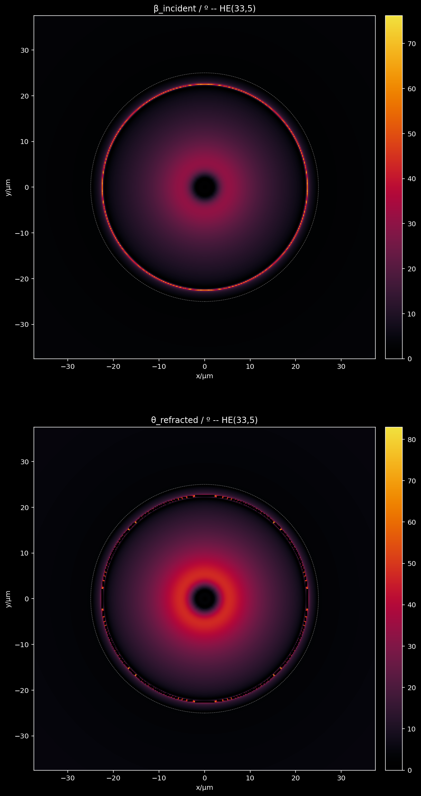
[285]:
# get a mode
indexPercent = 0.9
index = int(indexPercent * totalModes)
nFree = 1.0
annot = annotations[index]
# pick the E and H fields
Efield = eigenbasis[index, 0, :, :, :]
Hfield = np.conjugate(eigenbasis[index, 1, :, :, :])
# #EXH-Calc
# calculate the Poynting vector
Sfield = 0.5*np.real(np.cross(Efield, Hfield, axis=0))
# #normIncidentk-Calc
# calculate the magnitude of the Poynting field
Sfieldmag = np.sqrt(np.sum(Sfield**2, axis=0))
# calculate the transverse component of the Poynting vector
Stransverse = np.sqrt(Sfield[0,:,:]**2 + Sfield[1,:,:]**2)
# calculate the direction of the Poynting vector use that to estimate angles of incidence
# here it's assumed that the normal is pointing in the +z direction
# #β-Calc
βfield = np.arctan2(Stransverse, Sfield[2, :, :])
# #θ-Calc
θfield = np.arcsin(nxy/nFree * np.sin(βfield))
# calculate the unit vector in the direction of the Poynting vector
kfield = Sfield / Sfieldmag
numNans_k = np.sum(np.isnan(kfield))
numNans_β = np.sum(np.isnan(βfield))
numNans_θ = np.sum(np.isnan(θfield))
print("kfield has {} NaNs".format(numNans_k))
print("βfield has {} NaNs".format(numNans_β))
print("θfield has {} NaNs".format(numNans_θ))
# #FresnelS-Calc
# #FresnelP-Calc
# These I can calculate using the refractive indices and the angles of incidence
# S is perpendicular to plane of incidence
fresnelS = (2 * nxy * np.cos(βfield)
/ ( nxy * np.cos(βfield)
+ np.sqrt(nFree**2
- nxy**2 * np.sin(βfield)**2)
)
)
fresnelP = (2 * nFree * nxy * np.cos(βfield)
/ (nFree**2 * np.cos(βfield)
+ nxy * np.sqrt(nFree**2
- nxy**2 * np.sin(βfield)**2)
)
)
# #ζ-Calc
# calculate the unit vector field perpendicular to the plane of incidence
# which is basically k X z
ζfield = np.zeros(kfield.shape)
ζfield[0] = kfield[1]
ζfield[1] = -kfield[0]
# normalize the ζfield
ζfield /= np.sqrt(np.sum(np.abs(ζfield)**2, axis=0))
# decompose the field in P and S polarizations
# first find P-pol and then use the complement to determine S-pol
# the S-pol can be obtained by the dot product of E with ζ
#EincS-Calc
ESdot = Efield[0,:,:] * ζfield[0] + Efield[1,:,:] * ζfield[1]
EincS = np.zeros(ζfield.shape)
EincS[0] = ESdot[0] * ζfield[0]
EincS[1] = ESdot[1] * ζfield[1]
#EincP-Calc
EincP = Efield - EincS
del ESdot
#ErefS-Calc
ErefS = np.zeros(Efield.shape)
ErefS[0] = fresnelS * EincS[0]
ErefS[1] = fresnelS * EincS[1]
ErefS[2] = fresnelS * EincS[2]
#ErefP-Calc
ErefP = np.zeros(Efield.shape)
ErefP[0] = fresnelP * EincP[0]
ErefP[1] = fresnelP * EincP[1]
ErefP[2] = fresnelP * EincP[2]
#Eref-Calc
Eref = ErefS + ErefP
#kref-Calc
ξfield = np.zeros(ζfield.shape)
ξfield[0] = -ζfield[1]
ξfield[1] = ζfield[0]
kref = np.zeros(kfield.shape)
kref[0] = np.sin(θfield) * ξfield[0]
kref[1] = np.sin(θfield) * ξfield[1]
kref[2] = np.cos(θfield)
#Href-Calc
Href = nFree * np.cross(kref, Eref, axis=0)
kfield has 3 NaNs
βfield has 0 NaNs
θfield has 472 NaNs
[286]:
# def poyntingrefractor(Efield, Hfield, nxy, nFree, verbose=False):
# '''
# Approximate the refracted field across a planar interface
# using the Poynting vector as an analog to the wavevector of
# a plane-wave.
# Parameters
# ----------
# Efield : np.array (3, N, M)
# The electric field incident on the interface.
# Hfield : np.array (3, N, M)
# The H-field incident on the interface.
# nxy : np.array (N, M)
# The refractive index transverse to the interface inside the incident medium.
# nFree : float
# The refractive index of the homogeneous refractive medium.
# verbose : bool, optional
# Whether to print or not progress messages, by default False.
# '''
# # #EXH-Calc
# # calculate the Poynting vector
# if verbose:
# print("Calculating the Poynting vector field...")
# Sfield = 0.5*np.real(np.cross(Efield, Hfield, axis=0))
# # #normIncidentk-Calc
# # calculate the magnitude of the Poynting field
# if verbose:
# print("Calculating the magnitude of the Poynting field...")
# Sfieldmag = np.sqrt(np.sum(Sfield**2, axis=0))
# if verbose:
# print("Calculating the transverse component of the Poynting field...")
# # calculate the unit vector in the direction of the Poynting vector
# if verbose:
# print("Calculating the unit vector in the direction of the Poynting vector...")
# kfield = Sfield / Sfieldmag
# # calculate the transverse component of the Poynting vector
# Stransverse = np.sqrt(Sfield[0,:,:]**2 + Sfield[1,:,:]**2)
# # #β-Calc
# if verbose:
# print("Calculating the angle of incidence field...")
# # Assuming that the normal is pointing in the +z direction
# βfield = np.arctan2(Stransverse, Sfield[2, :, :])
# # #θ-Calc
# if verbose:
# print("Calculating the angle of refraction field...")
# θfield = np.arcsin(nxy/nFree * np.sin(βfield))
# # #FresnelS-Calc
# if verbose:
# print("Calculating the Fresnel coefficients...")
# fresnelS = (2 * nxy * np.cos(βfield)
# / ( nxy * np.cos(βfield)
# + np.sqrt(nFree**2
# - nxy**2 * np.sin(βfield)**2)
# )
# )
# # #FresnelP-Calc
# fresnelP = (2 * nFree * nxy * np.cos(βfield)
# / (nFree**2 * np.cos(βfield)
# + nxy * np.sqrt(nFree**2
# - nxy**2 * np.sin(βfield)**2)
# )
# )
# # #ζ-Calc
# if verbose:
# print("Calculating the ζ of the local coord system...")
# # calculate the unit vector field perpendicular to the plane of incidence
# # which is basically k X z
# ζfield = np.zeros(kfield.shape)
# ζfield[0] = kfield[1]
# ζfield[1] = -kfield[0]
# # normalize it
# ζfield /= np.sqrt(np.sum(np.abs(ζfield)**2, axis=0))
# # #EincS-Calc
# if verbose:
# print("Calculating the S and P component of the incident electric field...")
# # decompose the field in P and S polarizations
# # first find P-pol and then use the complement to determine S-pol
# # the S-pol can be obtained by the dot product of E with ζ
# ESdot = Efield[0,:,:] * ζfield[0] + Efield[1,:,:] * ζfield[1]
# EincS = np.zeros(ζfield.shape)
# EincS[0] = ESdot[0] * ζfield[0]
# EincS[1] = ESdot[1] * ζfield[1]
# # #EincP-Calc
# EincP = Efield - EincS
# del ESdot
# # #ErefS-Calc
# if verbose:
# print("Calculating the S and P component of the refracted electric field...")
# ErefS = np.zeros(Efield.shape)
# ErefS[0] = fresnelS * EincS[0]
# ErefS[1] = fresnelS * EincS[1]
# ErefS[2] = fresnelS * EincS[2]
# # #ErefP-Calc
# ErefP = np.zeros(Efield.shape)
# ErefP[0] = fresnelP * EincP[0]
# ErefP[1] = fresnelP * EincP[1]
# ErefP[2] = fresnelP * EincP[2]
# # #Eref-Calc
# if verbose:
# print("Calculating the total refracted electric field...")
# Eref = ErefS + ErefP
# # #kref-Calc
# if verbose:
# print("Calculating the refracted wavevector (normalized) field...")
# ξfield = np.zeros(ζfield.shape)
# ξfield[0] = -ζfield[1]
# ξfield[1] = ζfield[0]
# kref = np.zeros(kfield.shape)
# kref[0] = np.sin(θfield) * ξfield[0]
# kref[1] = np.sin(θfield) * ξfield[1]
# kref[2] = np.cos(θfield)
# # #Href-Calc
# if verbose:
# print("Calculating the refracted H field...")
# Href = nFree * np.cross(kref, Eref, axis=0)
# return Eref, Href
[419]:
indexPercent = 0.9
index = int(indexPercent * totalModes)
nFree = 1.0
annot = annotations[index]
# pick the E and H fields
Einc = eigenbasis[index, 0, :, :, :]
Hinc = np.conjugate(eigenbasis[index, 1, :, :, :])
kref, Eref, Href = ws.poyntingrefractor(Einc, Hinc, nFree, nxy, verbose=True)
Calculating the Poynting vector field...
Calculating the magnitude of the Poynting field...
Calculating the transverse component of the Poynting field...
Calculating the unit vector in the direction of the Poynting vector...
Calculating the angle of incidence field...
Calculating the angle of refraction field...
Calculating the Fresnel coefficients...
Calculating the ζ of the local coord system...
Calculating the S and P component of the incident electric field...
Calculating the S and P component of the refracted electric field...
Calculating the total refracted electric field...
Calculating the refracted wavevector (normalized) field...
Calculating the refracted H field...
[417]:
# calculate the refraction of a plane wave
dim = 500
nwg = 1.5
nxy = nwg * np.ones((dim, dim))
nFree = 1.
Efield = np.zeros((3, dim, dim))
γ = 60 / 180 * np.pi
Efield[0] = 0
Efield[1] = -np.cos(γ)
Efield[2] = np.sin(γ)
kinc = np.array([0,np.sin(γ),np.cos(γ)])
Hfield = 1.5 * np.cross(kinc, Efield, axis=0)
kref, Eref, Href = ws.poyntingrefractor(Efield, Hfield, nxy, nFree, verbose=True)
kref = np.array([kref[1,0,0],kref[2,0,0]])
Calculating the Poynting vector field...
Calculating the magnitude of the Poynting field...
Calculating the transverse component of the Poynting field...
Calculating the unit vector in the direction of the Poynting vector...
Calculating the angle of incidence field...
Calculating the angle of refraction field...
Calculating the Fresnel coefficients...
Calculating the ζ of the local coord system...
Calculating the S and P component of the incident electric field...
Calculating the S and P component of the refracted electric field...
Calculating the total refracted electric field...
Calculating the refracted wavevector (normalized) field...
Calculating the refracted H field...
[411]:
fig, ax = plt.subplots()
ax.plot([0, kref[0]], [0, kref[1]])
ax.plot([0, -kinc[1]], [0, -kinc[1]])
ax.axis('equal')
plt.show()
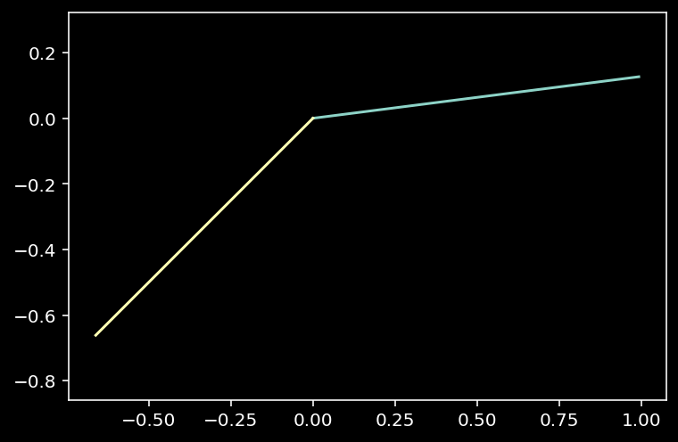
[344]:
# dim = 500
# nxy = 1.5 * np.ones((dim, dim))
# Efield = np.zeros((3, dim, dim))
# Efield[0] = 1
# Efield[1] = 0
# Efield[2] = 0
# kinc = np.array([0,0,1])
# Hfield = np.cross(kinc, Efield, axis=0)
# # #EXH-Calc
# # calculate the Poynting vector
# Sfield = 0.5*np.real(np.cross(Efield, Hfield, axis=0))
# # #normIncidentk-Calc
# # calculate the magnitude of the Poynting field
# Sfieldmag = np.sqrt(np.sum(Sfield**2, axis=0))
# # calculate the transverse component of the Poynting vector
# Stransverse = np.sqrt(Sfield[0,:,:]**2 + Sfield[1,:,:]**2)
# # calculate the direction of the Poynting vector use that to estimate angles of incidence
# # here it's assumed that the normal is pointing in the +z direction
# # #β-Calc
# βfield = np.arctan2(Stransverse, Sfield[2, :, :])
# # #θ-Calc
# θfield = np.arcsin(nxy/nFree * np.sin(βfield))
# # calculate the unit vector in the direction of the Poynting vector
# kfield = Sfield / Sfieldmag
# numNans_k = np.sum(np.isnan(kfield))
# numNans_β = np.sum(np.isnan(βfield))
# numNans_θ = np.sum(np.isnan(θfield))
# print("kfield has {} NaNs".format(numNans_k))
# print("βfield has {} NaNs".format(numNans_β))
# print("θfield has {} NaNs".format(numNans_θ))
# # #FresnelS-Calc
# # #FresnelP-Calc
# # These I can calculate using the refractive indices and the angles of incidence
# # S is perpendicular to plane of incidence
# fresnelS = (2 * nxy * np.cos(βfield)
# / ( nxy * np.cos(βfield)
# + np.sqrt(nFree**2
# - nxy**2 * np.sin(βfield)**2)
# )
# )
# fresnelP = (2 * nFree * nxy * np.cos(βfield)
# / (nFree**2 * np.cos(βfield)
# + nxy * np.sqrt(nFree**2
# - nxy**2 * np.sin(βfield)**2)
# )
# )
# # #ζ-Calc
# # calculate the unit vector field perpendicular to the plane of incidence
# # which is basically k X z
# ζfield = np.zeros(kfield.shape)
# ζfield[0] = kfield[1]
# ζfield[1] = -kfield[0]
# # normalize the ζfield
# ζfield /= np.sqrt(np.sum(np.abs(ζfield)**2, axis=0))
# # in the case of normal incidence, ζfield is undefined
# # so set it can be set to anything
# normalIncidence = (βfield == 0)
# ζfield[0][normalIncidence] = 1
# ζfield[1][normalIncidence] = 0
# ζfield[2][normalIncidence] = 0
# # decompose the field in P and S polarizations
# # first find P-pol and then use the complement to determine S-pol
# # the S-pol can be obtained by the dot product of E with ζ
# #EincS-Calc
# ESdot = Efield[0,:,:] * ζfield[0] + Efield[1,:,:] * ζfield[1]
# EincS = np.zeros(ζfield.shape)
# EincS[0] = ESdot[0] * ζfield[0]
# EincS[1] = ESdot[1] * ζfield[1]
# #EincP-Calc
# EincP = Efield - EincS
# del ESdot
# #ErefS-Calc
# ErefS = np.zeros(Efield.shape)
# ErefS[0] = fresnelS * EincS[0]
# ErefS[1] = fresnelS * EincS[1]
# ErefS[2] = fresnelS * EincS[2]
# #ErefP-Calc
# ErefP = np.zeros(Efield.shape)
# ErefP[0] = fresnelP * EincP[0]
# ErefP[1] = fresnelP * EincP[1]
# ErefP[2] = fresnelP * EincP[2]
# #Eref-Calc
# Eref = ErefS + ErefP
# #kref-Calc
# ξfield = np.zeros(ζfield.shape)
# ξfield[0] = -ζfield[1]
# ξfield[1] = ζfield[0]
# kref = np.zeros(kfield.shape)
# kref[0] = np.sin(θfield) * ξfield[0]
# kref[1] = np.sin(θfield) * ξfield[1]
# kref[2] = np.cos(θfield)
# #Href-Calc
# Href = nFree * np.cross(kref, Eref, axis=0)
kfield has 0 NaNs
βfield has 0 NaNs
θfield has 0 NaNs
[345]:
Eref
[345]:
array([[[1.2, 1.2, 1.2, ..., 1.2, 1.2, 1.2],
[1.2, 1.2, 1.2, ..., 1.2, 1.2, 1.2],
[1.2, 1.2, 1.2, ..., 1.2, 1.2, 1.2],
...,
[1.2, 1.2, 1.2, ..., 1.2, 1.2, 1.2],
[1.2, 1.2, 1.2, ..., 1.2, 1.2, 1.2],
[1.2, 1.2, 1.2, ..., 1.2, 1.2, 1.2]],
[[0. , 0. , 0. , ..., 0. , 0. , 0. ],
[0. , 0. , 0. , ..., 0. , 0. , 0. ],
[0. , 0. , 0. , ..., 0. , 0. , 0. ],
...,
[0. , 0. , 0. , ..., 0. , 0. , 0. ],
[0. , 0. , 0. , ..., 0. , 0. , 0. ],
[0. , 0. , 0. , ..., 0. , 0. , 0. ]],
[[0. , 0. , 0. , ..., 0. , 0. , 0. ],
[0. , 0. , 0. , ..., 0. , 0. , 0. ],
[0. , 0. , 0. , ..., 0. , 0. , 0. ],
...,
[0. , 0. , 0. , ..., 0. , 0. , 0. ],
[0. , 0. , 0. , ..., 0. , 0. , 0. ],
[0. , 0. , 0. , ..., 0. , 0. , 0. ]]])
[333]:
# ζfield = np.zeros(kfield.shape)
# ζfield[0] = kfield[1]
# ζfield[1] = -kfield[0]
# np.sqrt(np.sum(np.abs(ζfield)**2, axis=0))
[333]:
array([[0., 0., 0., ..., 0., 0., 0.],
[0., 0., 0., ..., 0., 0., 0.],
[0., 0., 0., ..., 0., 0., 0.],
...,
[0., 0., 0., ..., 0., 0., 0.],
[0., 0., 0., ..., 0., 0., 0.],
[0., 0., 0., ..., 0., 0., 0.]])
[329]:
np.sum(np.isnan(ζfield))
[329]:
750000
[283]:
athing = np.random.random(kref.shape)
bthing = np.random.random(kref.shape)
cthing = np.cross(athing, bthing, axis=0)
(np.sum(~(cthing[0] == (athing[1]*bthing[2] - athing[2]*bthing[1]))),
np.sum(~(cthing[1] == (-athing[0]*bthing[2] + athing[2]*bthing[0]))),
np.sum(~(cthing[2] == (athing[0]*bthing[1] - athing[1]*bthing[0]))))
[283]:
(0, 0, 0)
[274]:
np.sum(~(Href[1] == (-kref[0]*Eref[2] + kref[2]*Eref[0])))
[274]:
473
[276]:
np.sum(np.isnan(kref))
[276]:
1418
[258]:
# indexpick = 80
# akinc = np.array([kfield[0,indexpick,indexpick], kfield[1,indexpick,indexpick], kfield[2,indexpick,indexpick]])
# aζinc = np.array([ζfield[0,indexpick,indexpick], ζfield[1,indexpick,indexpick], ζfield[2,indexpick,indexpick]])
# dot1 = np.dot(akinc, aζinc)
# akref = np.array([kref[0,indexpick,indexpick], kref[1,indexpick,indexpick], kref[2,indexpick,indexpick]])
# dot2 = np.dot(akref, aζinc)
# aθ = θfield[indexpick,indexpick]
# aβ = βfield[indexpick,indexpick]
# dot3 = np.dot(akinc, akref)
# (dot1, dot2, dot3 - np.cos(aθ-aβ))
[208]:
# using these I can also compute the local field of tranmission
transmissionS = np.real(fresnelS)**2 * (nFree**2/nCore**2)
transmissionP = np.real(fresnelP)**2 * (nFree**2/nCore**2)
fig, ax = plt.subplots(figsize=(15,15))
iplot = ax.imshow(transmissionP,
cmap=cm.ember,
extent=extent)
circle = Circle((0,0), a, linestyle='--', edgecolor='white', facecolor='none', alpha=0.5, linewidth=0.5)
ax.add_patch(circle)
divider = make_axes_locatable(ax)
cax = divider.append_axes("right", size="5%", pad=0.2)
plt.colorbar(iplot, cax=cax)#, format=ticker.FuncFormatter(fmt))
plt.show()

[ ]:
[ ]:
plt.figure(figsize=(12, 5))
plt.hist(transmissionS.flatten(), bins=100)
plt.xlabel('T')
plt.ylabel('frequency')
plt.yscale('log')
plt.show()

[ ]:
string = '''# Local-k approximation to refraction
Given a mode in the waveguide whose propagation is suddenly truncated by the end of the waveguide, find the fields right outside the fiber by using the direction of the Poynting vector as a local direction of propagation of the incident fields.
```
┌────────────────────────────────────────────────────────────────────────┐
│ ...................................................................... │
│ ...................................................................... │
│ ...............................┌──────┐............................... │
│ ...............................│E', H'│............................... │
│ ...............................└──────┘.................... ..... │
│ ........................................................... nr ..... │
│ ........................................................... ..... │
│ XXXXXXXXXXXXXXXXXXXXXXXXXXXX--------------XXXXXXXXXXXXXXXXXXXXXXXXXXXX │
│ XXXXXXXXXXXXXXXXXXXXXXXXXXXX--------------XXXXXXXXXXXXXXXX XXXX │
│ XXXXXXXXXXXXXXXXXXXXXXXXXXXX----┌────┐----XXXXXXXXXXXXXXXX n(x,y) XXXX │
│ XXXXXXXXXXXXXXXXXXXXXXXXXXXX----│E, H│----XXXXXXXXXXXXXXXX XXXX │
│ XXXXXXXXXXXXXXXXXXXXXXXXXXXX----└────┘----XXXXXXXXXXXXXXXXXXXXXXXXXXXX │
│ XXXXXXXXXXXXXXXXXXXXXXXXXXXX--------------XXXXXXXXXXXXXXXXXXXXXXXXXXXX │
│ XXXXXXXXXXXXXXXXXXXXXXXXXXXX--------------XXXXXXXXXXXXXXXXXXXXXXXXXXXX │
│ XXXXXXXXXXXXXXXXXXXXXXXXXXXX--------------XXXXXXXXXXXXXXXXXXXXXXXXXXXX │
│ │
│ │ │
│ │
│ │ │
│ │
│ ├┐ ┌──── │
│ └─┐ θ ┌────┘ │
│ │ └─┐ ┌────┘ │
│ └─┐ ┌────┘ │
│ │ ┌───┴─┘ nr │
│ ─ ─ ─ ─ ─ ─ ─ ─ ─ ─ ─ ─ ─ ┬────┘─ ─ ─ ─ ─ ─ ─ ─ ─ ─ ─ ─ ─ ─ │
│ ┌─┘ │ n(x,y) │
│ ┌─┘ │
│ ┌┬┘ │ │
│ ┌─┘└─┐ │
│ ┌─┘ └─┐ │ │
│ ┌─┘ β └─┐ │
│ ┌─┘ └┤ │
│ ┌─┘ │
│ ─┘ │ │
│ │
└────────────────────────────────────────────────────────────────────────┘
```
```mermaid
flowchart TB
Start["Given:
k_z : propagation constant of mode
Δλ : sampling resolution of arrays
a : the radius of the waveguide core
b : side of computational square
nCore : ref index of core
nCladding : ref index of cladding
nFree : ref index of launching space"]
Start --> indexArray["[#nxy-Calc]
Calculate n(x,y) on a plane
transverse to the waveguide."]
Start --> AeAhBeBh["[#AB-Calc]
Calculate the coefficients
Ae, Ah, Be, Bh over the core and cladding
regions for the related mode."]
AeAhBeBh --> Field["[#EH-Calc]
Calculate the numerical
values of the mode over
a grid with resolution Δλ.
E(x,y) = (E_z, <b>E<b/>_T)
H(x,y) = (H_z, <b>H<b/>_T)"]
Field --> Poynting["[#EXH-Calc]
Poynting Vector Field
<b>P</b>(x,y) = ½ Re(<b>E</b> x <b>H</b>*)"]
Poynting --> localk["[#normIncidentk-Calc]
Normalized incident k <br>k̂ := <b>k</b>/|k| ≈ <b>P</b>/|P|"]
localk --> Incident["[#β-Calc]
Angle of incidence across interface
β(x,y)"]
Incident & indexArray --> Refracted["[#θ-Calc]
Angles of refraction across interface
θ(x,y)"]
Incident & Field --> FresnelS["[#FresnelS-Calc]
Fresnel-S Coefficient
FS(x,y) = E_S'/E_S (S-pol)"]
Incident & Field --> FresnelP["[#FresnelP-Calc]
Fresnel-P Coefficient<br>FP(x,y) = E_P'/E_P (P-pol)"]
localk --> Sdir["[#ζ-Calc]
S-Normal vector field
(Direction normal to plane of incidence)
<b>ζ(x,y)<b/> = ẑ x k̂
ζ̂(x,y) = <b>ζ<b/> / |ζ|"]
Sdir --> Spol["[#EincS-Calc]
S-component of E
E_S = <b>E</b> · ζ̂"]
Spol --> Ppol["[#EincP-Calc]
P-component of E
E_P = E - E_S"]
Ppol & FresnelP --> EPref["[#ErefP-Calc]
Refracted E (P-pol)
E_P' = E_P FP(x,y)"]
Spol & FresnelS --> ESref["[#ErefS-Calc]
Refracted E (S-pol)
E_S' = E_S FS(x,y)"]
EPref & ESref --> Eref["[#Eref-Calc]
The refracted electric field
E' = E_S + E_P"]
indexArray & localk --> localkrefnorm["[#kref-Calc]
Normalized refracted k̂'
<b>k̂'</b>"]
localkrefnorm & Eref --> Href["[#Href-Calc]
The refracted H-field<br>H' ≈ √(μ'ϵ')/µ' k̂' x E'"]
style Start fill:blue
style Href fill:red
style Eref fill:red
```
'''
[ ]:
# import re
# def extract_substrings_inside_square_brackets(text):
# pattern = r'\[#([^]]+)\]'
# substrings = re.findall(pattern, text)
# return substrings
# hashes = extract_substrings_inside_square_brackets(string)
# for idx, hash in enumerate(hashes):
# print(f'{hash}')
[ ]:
'''
nxy-Calc
AB-Calc
EH-Calc
EXH-Calc
normIncidentk-Calc
β-Calc
θ-Calc
FresnelS-Calc
FresnelP-Calc
ζ-Calc
EincS-Calc
EincP-Calc
ErefP-Calc
ErefS-Calc
Eref-Calc
kref-Calc
Href-Calc
'''
####Spaguetti code¶
[ ]:
# given a field (Ex, Ey, Ez) at a plane calculate the discrete
# fourier transform of the field in the x,y,z directions
# this would provide the field in the frequency domain
# the field is assumed to be periodic in the x,y,z directions
fiberfield_t = np.copy(eigenbasis[0,0,:,:,:])
# at the moment I haven't calculate the z component of the field
# let me just assume a z component that is roughly of the same magnitude
# of the x and y components, that starts normal at the center and
# deviates to the NA of the fiber at the edge of it
[ ]:
Ex = fiberfield_t[0,:,:]
Ey = fiberfield_t[1,:,:]
NA = fiber_sol['NA']
nCore = fiber_sol['nCore']
a = fiber_sol['coreRadius']
thetamax = np.arcsin(NA/nCore)
# calculate the magnitude of the transverse field
r = np.sqrt(Xg**2+Yg**2)
# calculate the angle of E at each point
launchAngle = thetamax/a * r
# knowing the angle at each position I should be able to "calculate"
# the z component of the field
# this doesn't make any sense, the direction of the
# electric field is not the direction of the wave vector
# ok, instead let me estimate the direction of the wave vector
# across the fiber and then use that together with the field at
# each position to determine what is a compatible value for the z component
kmag = 2*np.pi/λfree*nCore
dirfield = np.arctan2(Yg, Xg)
xhat = np.cos(dirfield)
yhat = np.sin(dirfield)
kz = kmag * np.cos(launchAngle)
kx = kmag * np.sin(launchAngle) * xhat
ky = kmag * np.sin(launchAngle) * yhat
# at every point
# now let me make
# use this to calculate a possible z component for E
dotEk = fiberfield_t[0,:,:] * kx + fiberfield_t[1,:,:] * ky
Ez = -dotEk/kz
# in this construction the electric field is always in parallel to the plane of incidence
fresnel = (2 * nCore * 1 * np.cos(launchAngle)
/ (1 * np.cos(launchAngle) + nCore * np.sqrt(1-nCore**2*np.sin(launchAngle)**2)))
Erefracted_x = fresnel * Ex
Erefracted_y = fresnel * Ey
Erefracted_z = fresnel * Ez
[ ]:
plt.figure()
plt.imshow(np.abs(Erefracted_x))
plt.show()

[ ]:
# ok, next part
# i need to find the farfield for the refracted field
# i think I have
apertureRadius = b
λ = λfree
k = 2 * np.pi / λ
replicas = 1
dist_to_ML = 20
zmax = dist_to_ML * 5
farfield_axis = np.linspace(0,zmax,100)
L = 2 * apertureRadius # spatial extent of the field
field = Erefracted_x
dx = L / field.shape[0]
idx_width = field.shape[0]
if replicas != 1:
nearfourier.shape = np.pad(field,(idx_width, idx_width))
else:
F = field
kx = 2 * np.pi * (np.fft.fftfreq(F.shape[0], d=dx))
ky = kx
kx, ky = np.meshgrid(kx, ky)
kz = np.sqrt(k**2 - kx**2 - ky**2 + 0j)
gator = 1.j * np.outer(farfield_axis, kz)
gator = gator.reshape((*farfield_axis.shape, *kz.shape))
gator = np.exp(gator)
[ ]:
import cmasher as cmr
[ ]:
farfields = {}
fields = {'ex':Erefracted_x, 'ey':Erefracted_y}
for field_component in ['ex','ey']:
field = fields[field_component]
dx = L / field.shape[0]
idx_width = field.shape[0]
F = field
# calculate the Fourier transform of the nearfield
nearfourier = np.fft.fft2(F)
# multiply by the farfield propagator
farfourier = nearfourier * gator
# calculate the inverse Fourier transform
farfield = np.fft.ifft2(farfourier)
extent = [-L/2 * replicas, L/2 * replicas, 0, zmax]
# get the field on the zx plane
pfield = np.abs(farfield[::,farfield.shape[-2]//2])**2
farfields[field_component] = pfield
plt.figure(figsize=(7,10))
plt.imshow(pfield,
cmap = cmr.ember,
extent = extent,
origin='lower')
plt.xlim(-L/2, L/2)
plt.xlabel('x/$\mu$m')
plt.ylabel('z/$\mu$m')
plt.title('|%s|^2' % field_component)
# plt.colorbar()
plt.show()